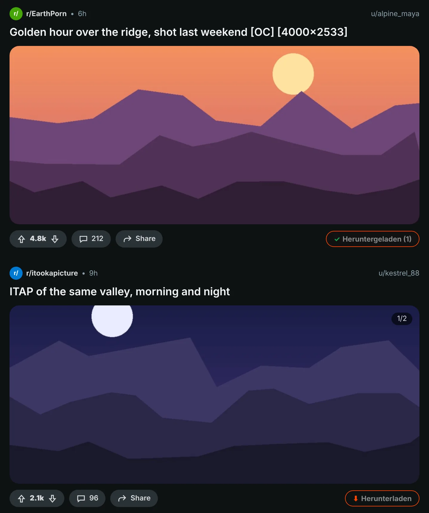
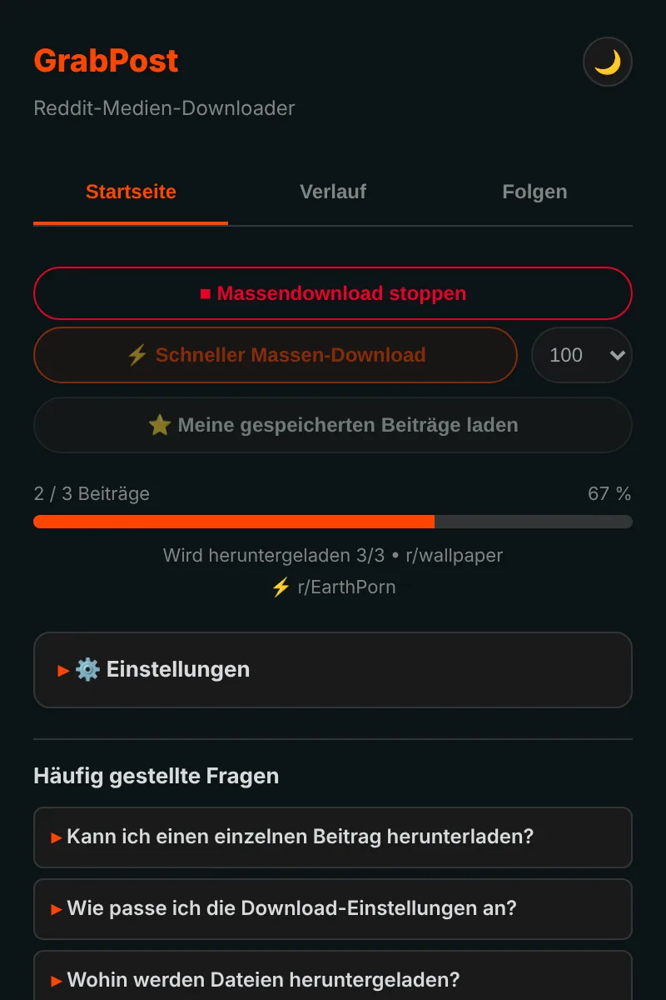
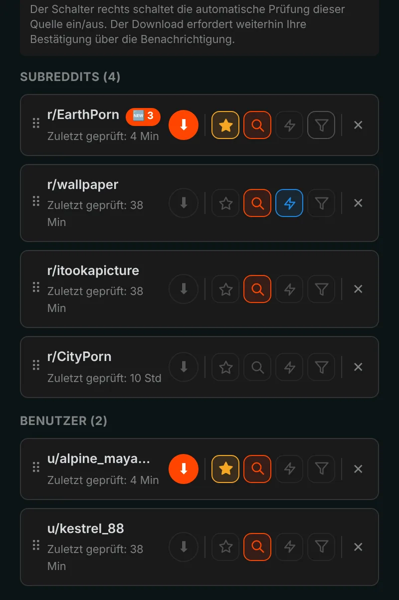
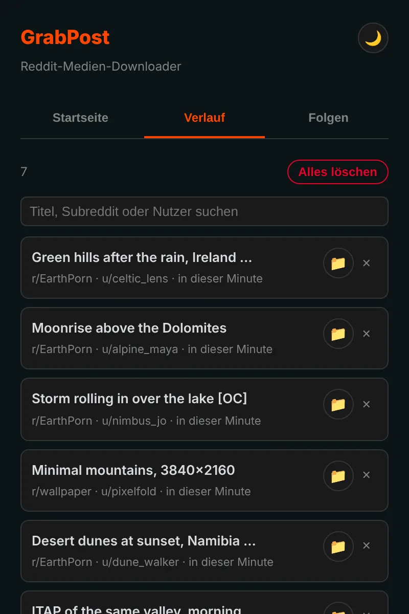

Alles von Reddit mit einem Klick speichern.
GrabPost setzt einen Download-Button unter jeden Reddit-Beitrag. Videos behalten ihren Ton, Galerien kommen vollständig an, und ganze Subreddits oder Profile laden, während du etwas anderes machst. Kostenlos und ohne Tracking.
Noch nicht in den Stores. Die Installation über GitHub dauert etwa eine Minute.
Drück den Button am Beitrag.
Ein Button an jedem Beitrag
Der orange Button sitzt in der Abstimmen- und Teilen-Zeile jedes Beitrags: im Feed, in Profilen und Suchergebnissen, im neuen und alten Reddit. Bilder, Galerien, GIFs, Redgifs und Imgur-Links funktionieren. Alt+Shift+D lädt den Beitrag in der Bildschirmmitte.

Ganze Seiten auf einmal
Der Schnellmodus liest ein Subreddit, Profil, Multireddit oder eine Suche direkt aus den Reddit-Daten, du musst also nicht scrollen. Was du schon hast, wird übersprungen, und bei bereits geladenen Beiträgen hört er auf. Deine gespeicherten Beiträge laden genauso.

Folgen, und neue Beiträge kommen zu dir
Folge Subreddits und Nutzern und erhalte eine Benachrichtigung, sobald neue Medien erscheinen, oder lass sie von selbst herunterladen. Filter nach Medientyp, NSFW oder Stichwörtern. Bis zu 10 Favoriten lassen sich bis zu alle 5 Minuten prüfen.

Jeder Download bleibt in Erinnerung
Der Verlauf listet, was du gespeichert hast, mit Suchfeld, und Beiträge, die du schon hast, werden auf Reddit markiert. Sicherungen entstehen automatisch, eine Neuinstallation löscht deine Liste nicht.

An die Details ist gedacht
Videos mit Ton
Reddit speichert den Ton in einer eigenen Datei. GrabPost findet sie und fügt sie zusammen, direkt in deinem Browser.
Deine Ordner, deine Dateinamen
Vorlagen wie {subreddit}/{user} für Ordner und {date}_{title} für Dateien.
Keine Duplikate
Erkennt dasselbe Bild, auch wenn es jemand in einem anderen Subreddit erneut hochgeladen hat.
Läuft neben IDM
Download-Manager können die Datei nicht übernehmen und deine Ordnernamen verwerfen.
Geduldig mit Reddit
Bittet Reddit um eine Pause, wartet GrabPost genau so lange wie verlangt und macht dann weiter.
15 Sprachen
Die Erweiterung und diese Seite sprechen deine Sprache.
Was du herunterlädst, geht nur dich etwas an
- Keine Analysen, kein Tracking, kein Konto
- Spricht nur mit Reddit und den Seiten, die dessen Medien hosten
- Verlauf und Einstellungen bleiben in deinem Browser
- Quellcode auf GitHub
In einer Minute installiert
GrabPost ist noch nicht im Chrome Web Store, daher wird es von Hand installiert. Es läuft in Chrome, Edge, Brave, Opera und anderen Chromium-Browsern.
- Lade die neueste grabpost-v…zip von GitHub herunter und entpacke sie in einen Ordner, den du behältst.
- Öffne
chrome://extensionsund schalte oben rechts den Entwicklermodus ein. - Klicke auf Entpackte Erweiterung laden und wähle den entpackten Ordner grabpost.
- Öffne Reddit. Der orange Button erscheint an den Beiträgen, das Symbol in der Symbolleiste öffnet das GrabPost-Panel.
Zum Aktualisieren ersetzt du die Dateien im selben Ordner und klickst auf der GrabPost-Karte auf Neu laden. Einstellungen und Verlauf bleiben erhalten.
Firefox: Die Version für den Add-on-Store ist unterwegs. Bis dahin lässt sich die Firefox-Zip vorübergehend über about:debugging laden.
Fragen
Ist GrabPost kostenlos?
Ja, jede Funktion ist kostenlos. Wenn es dir Zeit spart, kannst du dem Entwickler einen Kaffee spendieren.
Wo landen die Dateien?
Im Download-Ordner deines Browsers, in einem Unterordner deiner Wahl. Standardmäßig ist das Reddit Downloads, und Dateinamen beginnen mit dem Namen des Subreddits.
Muss ich bei Reddit angemeldet sein?
Nur für deine gespeicherten Beiträge und für altersbeschränkte Communities. Alles andere funktioniert ohne Konto.
Verliere ich meinen Verlauf bei einer Neuinstallation?
Nein. Mit aktivierter Browser-Synchronisierung kommen Einstellungen und Folgeliste von selbst zurück. Außerdem wird automatisch eine Sicherungsdatei gespeichert, und GrabPost kann den Verlauf aus der Download-Liste des Browsers wiederherstellen.
Funktioniert es in Edge, Brave oder Opera?
Ja. Jeder Chromium-Browser, der entpackte Erweiterungen laden kann, funktioniert mit der Chrome-Zip.
GrabPost herunterladen
Noch nicht in den Stores. Die Installation über GitHub dauert etwa eine Minute.